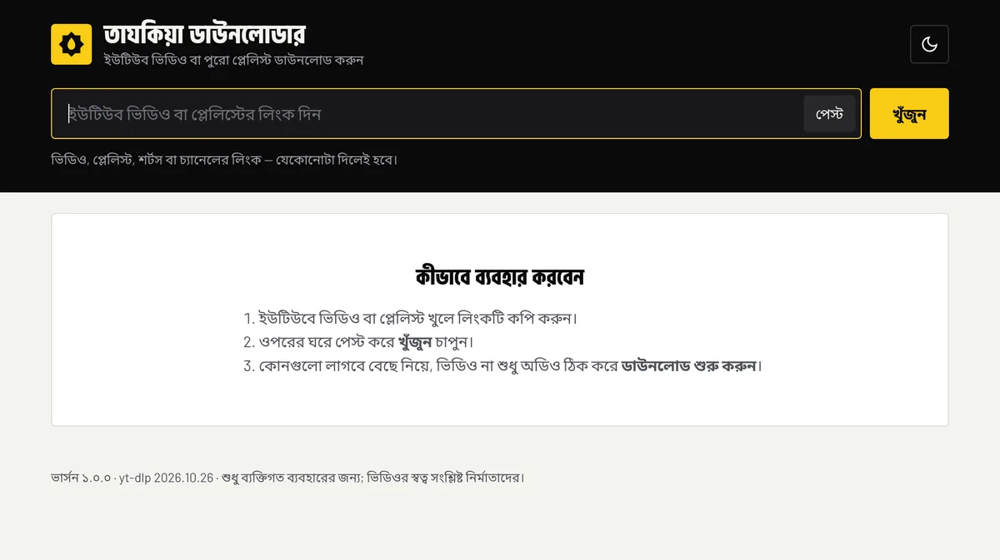
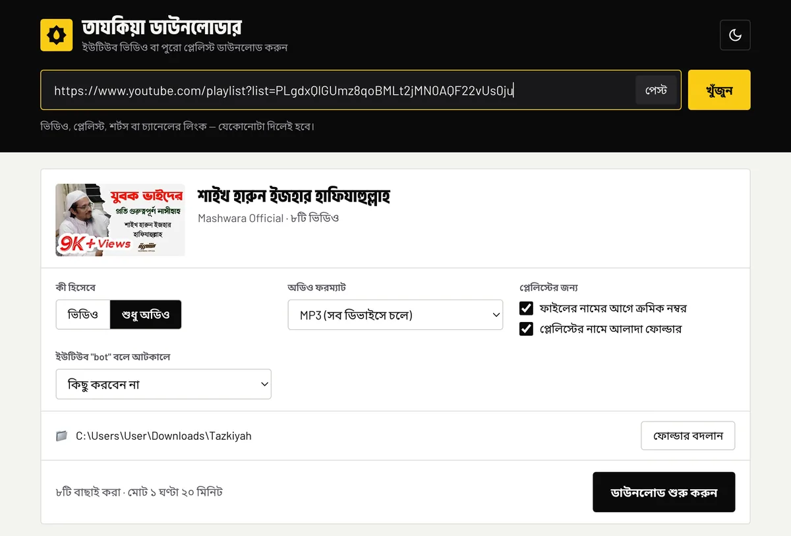
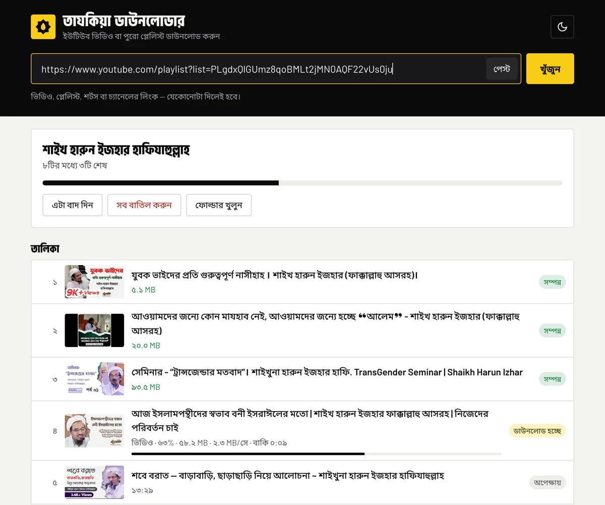
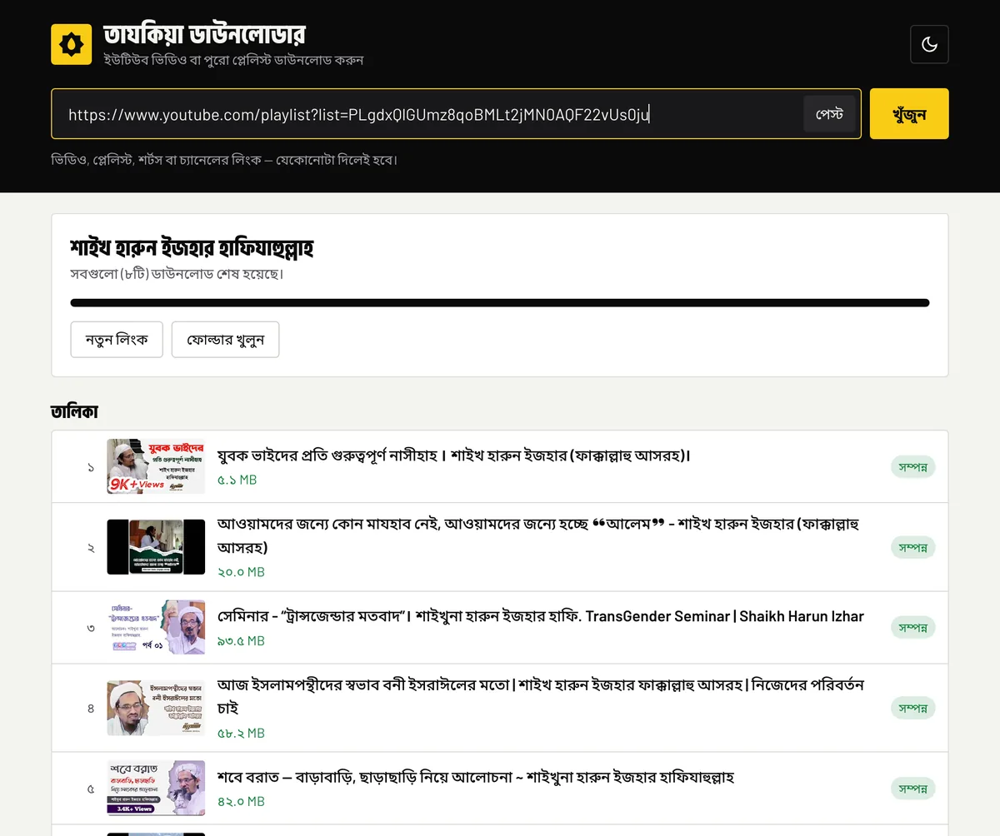

যা যা করতে পারবেন
- পুরো প্লেলিস্ট একবারেপ্লেলিস্টের লিংক দিলে সব ভিডিওর তালিকা আসে; যেগুলো লাগবে টিক দিয়ে বেছে নিন।
- ভিডিও বা শুধু অডিওভিডিও 360p থেকে 1080p বা সবচেয়ে ভালো মানে (MP4); লেকচার শুনতে শুধু অডিও (MP3 বা M4A)।
- গুছিয়ে সেভপ্লেলিস্ট তার নিজের নামে আলাদা ফোল্ডারে, ক্রমিক নম্বরসহ সেভ হয় — যে ক্রমে শুনবেন, সেই ক্রমেই।
- অগ্রগতি চোখের সামনেপ্রতিটি ফাইলের অগ্রগতি, গতি আর বাকি সময়; একটা বাদ দেওয়া বা সব বাতিল করা যায়।
- থামলেও সমস্যা নেইইন্টারনেট কেটে গেলে যেখানে থেমেছিল সেখান থেকেই আবার চলে; আগে ডাউনলোড হওয়া ফাইল আবার ডাউনলোড হয় না।
- বাংলায়, ঝামেলা ছাড়াপুরো অ্যাপ বাংলায়। অ্যাকাউন্ট লাগে না, বিজ্ঞাপন নেই, আলাদা কিছু ইনস্টলও করতে হয় না।
যেভাবে ইনস্টল করবেন
- ওপরের ডাউনলোড করুন বোতামে চাপুন —
TazkiyahDownloader-Setup.exeফাইলটি ডাউনলোড হবে। - ডাউনলোড শেষ হলে ফাইলটি খুলুন (ব্রাউজারের ডাউনলোড তালিকা বা Downloads ফোল্ডার থেকে)।
- Windows নীল রঙের সতর্কবার্তা দেখালে More info চাপুন, তারপর Run anyway।
- Next → Install → Finish। স্টার্ট মেনু আর ডেস্কটপে Tazkiyah Downloader পাবেন। অ্যাডমিন পাসওয়ার্ড লাগে না।
Microsoft Defender SmartScreen prevented an unrecognized app from starting. Running this app might put your PC at risk.
More info
এই বার্তাটা আসে কারণ অ্যাপটি কোনো কোম্পানির কেনা সার্টিফিকেটে সই করা নয় — ক্ষতিকর কিছু পাওয়া গেছে বলে নয়। প্রথমে More info চাপলে তবেই Run anyway বোতাম দেখা যায়। অ্যাপের পুরো সোর্স কোড GitHub-এ সবার জন্য খোলা।
যেভাবে ব্যবহার করবেন
নিচের ছবিগুলো অ্যাপেরই। উদাহরণ হিসেবে একটি লেকচারের প্লেলিস্ট নেওয়া হয়েছে।
-
লিংক কপি করে পেস্ট করুন
- ইউটিউবে যে ভিডিও বা প্লেলিস্ট চান সেটি খুলুন, ব্রাউজারের ঠিকানা (লিংক) কপি করুন। ফোনের ইউটিউব অ্যাপে Share → Copy link।
- অ্যাপের ওপরের ঘরে পেস্ট করুন (Ctrl + V বা পেস্ট বোতাম)। পেস্ট করলেই নিজে থেকে খোঁজা শুরু হয়, না হলে খুঁজুন চাপুন।
- ভিডিও, প্লেলিস্ট, শর্টস বা চ্যানেলের লিংক — সবই চলে।
 তাযকিয়া ডাউনলোডার
তাযকিয়া ডাউনলোডার
অ্যাপ খুললে প্রথমে এই পাতা আসে। -
তালিকা দেখে বেছে নিন
- প্লেলিস্টের নাম, কয়টি ভিডিও আর মোট কত সময় — সব দেখাবে।
- নিচের তালিকায় সবগুলো আগে থেকেই টিক দেওয়া; যেগুলো লাগবে না সেগুলোর টিক তুলে দিন, বা কোনোটাই না চেপে নিজে বাছুন।
- ভিডিওর মান: কম ডেটায় 360p বা 480p, সাধারণত 720p (HD)-ই যথেষ্ট।
- প্লেলিস্টের ভেতরের কোনো একটা ভিডিওর লিংক দিলে পুরো প্লেলিস্ট নাকি শুধু এই ভিডিও — দুটোর একটা বেছে নেওয়ার বোতাম আসে।
তাযকিয়া ডাউনলোডারপ্লেলিস্টের লিংক দেওয়ার পর: অপশন আর ভিডিওর তালিকা। -
লেকচার শুনবেন? শুধু অডিও নিন
- শুধু অডিও বাছলে ভিডিওর বদলে অডিও ফাইল হবে — আকারে ভিডিওর চেয়ে অনেক ছোট, ফোনে বা গাড়িতে শোনার জন্য ভালো।
- MP3 সব ফোন, কম্পিউটার আর স্পিকারে চলে; M4A আরও ছোট আর দ্রুত হয়।
- ফাইল কোথায় যাবে বদলাতে ফোল্ডার বদলান চাপুন। পরের বার অ্যাপ এই সব পছন্দ মনে রাখে।
তাযকিয়া ডাউনলোডার
শুধু অডিও বাছাই করলে ফরম্যাটের অপশন আসে। -
ডাউনলোড শুরু করুন
- ডাউনলোড শুরু করুন চাপলে একটার পর একটা ডাউনলোড হতে থাকে। প্রতিটির পাশে অগ্রগতি, গতি আর বাকি সময় দেখায়।
- কোনোটা লাগবে না মনে হলে এটা বাদ দিন; সব থামাতে সব বাতিল করুন।
- ভিডিও শেষে "ফাইল তৈরি হচ্ছে" লেখা আসে — তখন ভিডিও আর অডিও জোড়া লাগানো হয়; কয়েক সেকেন্ড লাগে।
- ডাউনলোড চলার সময় অ্যাপ বন্ধ করবেন না; ছোট করে (minimize) রাখতে পারেন।
তাযকিয়া ডাউনলোডার
ডাউনলোড চলছে: ওপরে মোট অগ্রগতি, নিচে প্রতিটি ফাইলের অবস্থা। -
শেষ হলে ফোল্ডার খুলুন
- সব শেষ হলে ফোল্ডার খুলুন চাপুন — ফাইলগুলো সেখানে পাবেন।
- কোনোটা ব্যর্থ হলে লাল লেখায় কারণ দেখাবে (যেমন ভিডিওটি প্রাইভেট)। ব্যর্থগুলো আবার চেষ্টা করুন চাপলে শুধু সেগুলো আবার চলবে।
- আরেকটা লিংক ডাউনলোড করতে নতুন লিংক চাপুন।
ফাইলগুলো এভাবে সাজানো থাকে:
Downloads\Tazkiyah\ └─ শাইখ হারুন ইজহার হাফিযাহুল্লাহ\ ├─ 001 - যুবক ভাইদের প্রতি গুরুত্বপূর্ণ নাসীহাহ….mp4 ├─ 002 - আওয়ামদের জন্যে কোন মাযহাব নেই….mp4 └─ 003 - সেমিনার - “ট্রান্সজেন্ডার মতবাদ”….mp4তাযকিয়া ডাউনলোডার
সব শেষ: প্রতিটির পাশে "সম্পন্ন" আর ফাইলের আকার।
সমস্যা হলে
"ইউটিউব সাময়িকভাবে আটকে দিয়েছে" দেখাচ্ছে
একসঙ্গে অনেক ডাউনলোড হলে ইউটিউব মাঝে মাঝে "আপনি কি রোবট?" ধরনের যাচাই চায়। অ্যাপ নিজেই কিছুক্ষণ থেমে দুবার আবার চেষ্টা করে। তাও না হলে:
- যে ব্রাউজারে আপনি ইউটিউবে লগইন করা আছেন, অপশনের ইউটিউব "bot" বলে আটকালে ঘর থেকে সেটি বেছে নিন। Firefox সবচেয়ে ভালো কাজ করে; Chrome বা Edge বাছলে সেটা আগে পুরো বন্ধ করে নিন।
- কিছুক্ষণ (আধা ঘণ্টা–এক ঘণ্টা) পরে আবার চেষ্টা করুন; ব্যর্থগুলো আবার চেষ্টা করুন চাপলেই হবে।
হঠাৎ কোনো ভিডিওই ডাউনলোড হচ্ছে না
ইউটিউব মাঝে মাঝে নিজের সিস্টেম বদলায়, তখন অ্যাপেরও আপডেট লাগে। এই পাতা থেকে আবার ডাউনলোড করুন চেপে নতুন ভার্সন ইনস্টল করুন — আগেরটার ওপরেই বসে যাবে, সেটিংস ঠিক থাকবে। অ্যাপের নিচে বর্তমান ভার্সন লেখা থাকে।
Windows ফাইলটা খুলতে দিচ্ছে না / ব্রাউজার ফাইলটা আটকে দিচ্ছে
Windows-এর নীল বার্তায় More info → Run anyway চাপুন (ওপরের ছবি দেখুন)। Chrome বা Edge "সচরাচর ডাউনলোড হয় না" বললে ডাউনলোড তালিকায় ফাইলটির পাশের ⋯ চেপে Keep চাপুন।
অ্যাপ খুললে সাদা বা খালি উইন্ডো দেখায়
অ্যাপটি Windows-এর Microsoft Edge WebView2 দিয়ে চলে, যা Windows ১০/১১-এ সাধারণত আগে থেকেই থাকে। না থাকলে Microsoft-এর সাইট থেকে WebView2 Runtime ইনস্টল করে অ্যাপটি আবার খুলুন।
কিছু ভিডিও "ব্যর্থ" দেখাচ্ছে
প্রাইভেট, মুছে ফেলা, বয়স-সীমাবদ্ধ বা শুধু চ্যানেল-মেম্বারদের ভিডিও ডাউনলোড করা যায় না; লাইভ শেষ না হলেও না। কারণটা ভিডিওর নিচে লাল লেখায় দেখায়।
ইনস্টল না করে চালানো যায়? আনইনস্টল করব কীভাবে?
পোর্টেবল zip ডাউনলোড করে যেকোনো ফোল্ডারে খুলুন (Extract all), তারপর ভেতরের TazkiyahDownloader.exe চালান — পেনড্রাইভেও রাখা যায়। আনইনস্টল করতে Windows Settings → Apps → Installed apps-এ Tazkiyah Downloader খুঁজে Uninstall চাপুন; আপনার ডাউনলোড করা ফাইল মুছবে না।
Mac বা ফোনে চলবে?
আপাতত শুধু Windows-এর জন্য তৈরি। ফোনে লেকচার অফলাইনে রাখতে তাযকিয়া Android অ্যাপ-এ সরাসরি সেভ করা যায়।
তাযকিয়া ডাউনলোডার
Windows ১০/১১ · ফ্রি · ওপেন সোর্স
শুধু ব্যক্তিগত ব্যবহারের জন্য। ইউটিউব থেকে ডাউনলোড ইউটিউবের শর্তের বাইরে; ভিডিওর স্বত্ব সংশ্লিষ্ট বক্তা ও নির্মাতাদের — অনুমতি ছাড়া আবার আপলোড বা বিক্রি করবেন না। অ্যাপটি ভিডিও ডাউনলোডের জন্য ওপেন সোর্স yt-dlp ব্যবহার করে, আর আপনার কোনো তথ্য কোথাও পাঠায় না। সব ভার্সন: GitHub রিলিজ।